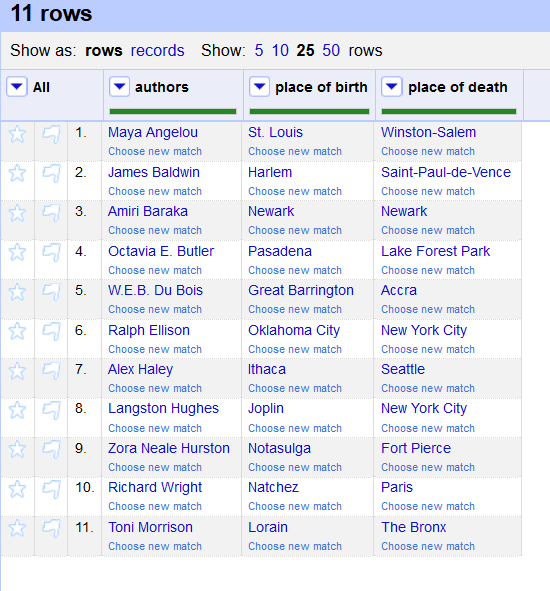
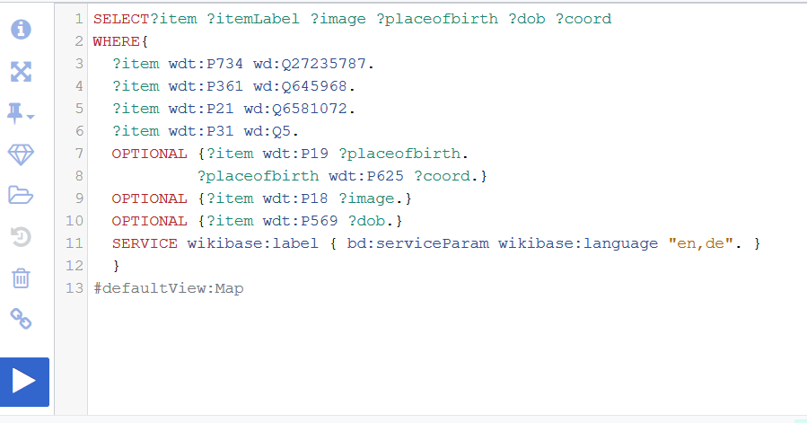
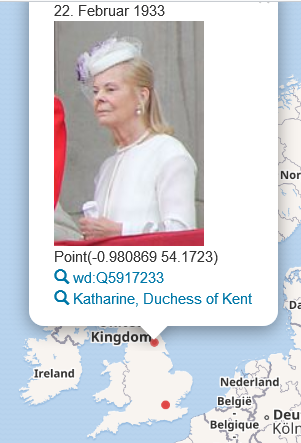

Die letzte Übungseinheit
VDie letzte Unterrichtseinheit konnte ich leider nicht live miterleben, da ich samstags immer arbeiten muss. Dennoch habe ich die Videoaufnahmen zwei Tage später nachbearbeitet und die Aufgaben dazu gelöst. Dabei ging es diesmal um einen kurzen Rückblick zur Virtuellen Maschine, resp. welche Möglichkeiten wir Studierende haben, wenn wir weiterhin mit einer VM arbeiten möchten und später um Linked Data und die Erstellung von Suchanfragen mit SPARQL.
Alternativen zu unserer Virtuellen Maschine
Bei den virtuellen Maschinen gibt es einen wesentlichen Unterschied, dieser betrifft den Serverort der VM, welcher lokal oder in einer Cloud sein kann. Bei den Cloud-Servern gibt es Root-Server (=Webserver) mit welchem man vollen Zugriff zur Installation von Software hat (d.h. man hat Administrationsrechte). Dabei kann man einen echten eigenen Server verwenden oder einen virtuellen Server. Der Vorteil von lokalen Servern ist die Cyber-Sicherheit, da man weniger einfach gehackt werden kann, als bei Cloud-Servern. Lokale Möglichkeiten sind bspw. die VirtualBox (eine VM), Docker Desktop (mit welchem Container anstatt virtuelle Maschinen gebaut werden) oder das Booten von einem USB-Stick/-Festplatte (die VM, resp. die Testumgebung kann von diesem aus verwendet werden).
OpenRefine und Wikidata
Nachdem gezeigt wurde, wie man einen Root-Server erstellt und wie OpenRefine auf diesem installiert wird, haben wir uns selbst an die Arbeit mit OpenRefine gesetzt und ein paar Aufgaben dazu gelöst. Da ich OpenRefine bereits installiert hatte, konnte ich dieses einfach öffnen und dem Tutorial im gemeinsamen Dokument folgen. Bei den Aufgaben ging es zuerst darum ein neues Projekt zu erstellen (mit der Eingabe eines Links), wobei einige Autorennamen erscheinen. Danach ging es an die «Reconciliation», die Eingeführten Daten sollten also noch angepasst werden. Zum Schluss konnten die Daten, die wir bereits hatten, mit Daten aus Wikidata ergänzt werden (hier um den Geburts- und den Todesort).

SPARQL-Anfragen im Wikidata Query Service
Zum Schluss folgten wir einem
Tutorial, wie man SPARQL-Anfragen im
Wikidata Query Service beschreibt. Diese Aufgabe hat ziemlich viel Spass gemacht und auch problemlos funktioniert. Meine Abfrage suchte erst nach allen Einträgen mit dem Familiennamen = Windsor. Weitere Bedingungen wie «Ist Teil der britischen Königsfamilie», Geschlecht weiblich und Gattung Mensch folgten. Das Ergebnis waren drei Frauen. Ich liess die Abfrage zum Schluss auch auf der Karte aufzeigen:

